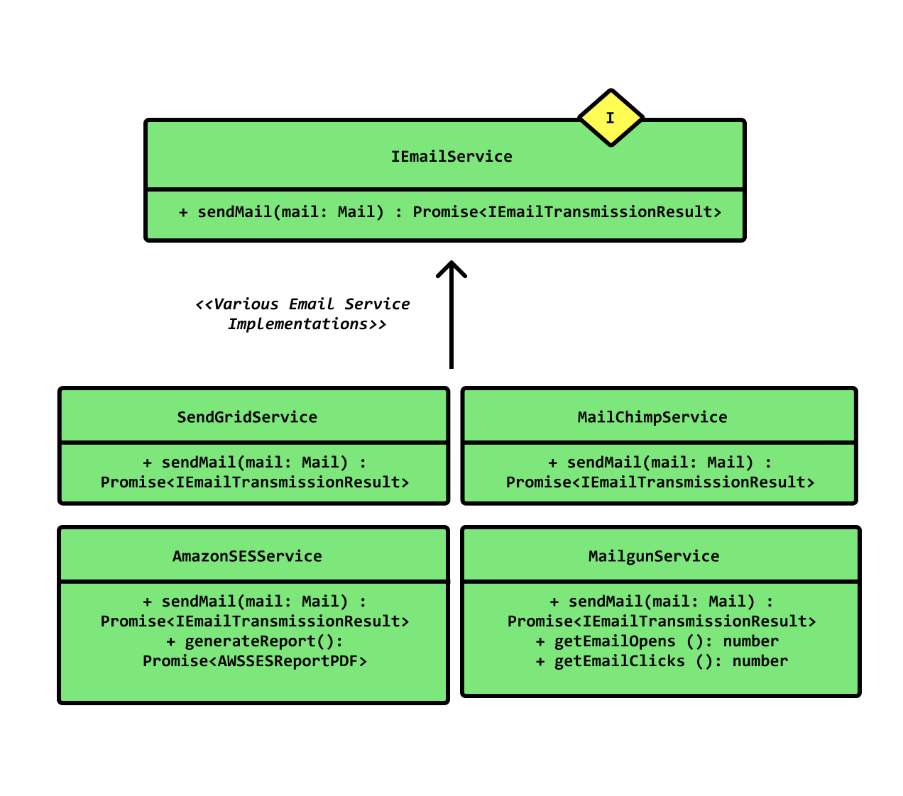

在程序设计领域， SOLID（单一功能、开闭原则、里氏替换、接口隔离以及依赖反转）是由罗伯特·C·马丁在21世纪早期引入，指代了面向对象编程和面向对象设计的五个基本原则。
当这些原则被一起应用时，它们使得一个程序员开发一个容易进行软件维护和扩展的系统变得更加可能。 SOLID所包含的原则是通过引发编程者进行软件源代码的代码重构进行软件的代码异味清扫，从而使得软件清晰可读以及可扩展时可以应用的指南。
SOLID被典型的应用在测试驱动开发上，并且是敏捷开发以及自适应软件开发的基本原则的重要组成部分。
SOLID原则简介
| 首字母 | 指代 | 概念 |
|---|---|---|
| S | 单一功能原则 | 对象应该仅具有一种单一功能 |
| O | 开闭原则 | 软件体应该是对于扩展开放的，但是对于修改封闭的 |
| L | 里氏替换原则 | 程序中对象在不改变程序正确性的前提下被它的子类所替换 |
| I | 接口隔离原则 | 多个特定客户端接口要好于一个宽泛用途的接口 |
| D | 依赖反转原则 | 依赖于抽象而不是一个实例 |
单一功能原则
在面向对象编程领域中，单一功能原则（Single responsibility principle）规定每个类都应该有一个单一的功能，并且该功能应该由这个类完全封装起来。所有它的（这个类的）服务都应该严密的和该功能平行（功能平行，意味着没有依赖）。
这个术语由罗伯特·C·马丁（Robert Cecil Martin）在他的《敏捷软件开发，原则，模式和实践》一书中的一篇名为〈面向对象设计原则〉的文章中给出。 马丁表述该原则是基于的《结构化分析和系统规格》一书中的内聚原则（Cohesion）上。
马丁把功能（职责）定义为：“改变的原因”，并且总结出一个类或者模块应该有且只有一个改变的原因。一个具体的例子就是，想象有一个用于编辑和打印报表的模块。这样的一个模块存在两个改变的原因。第一，报表的内容可以改变（编辑）。第二，报表的格式可以改变（打印）。这两方面会的改变因为完全不同的起因而发生：一个是本质的修改，一个是表面的修改。单一功能原则认为这两方面的问题事实上是两个分离的功能，因此他们应该分离在不同的类或者模块里。把有不同的改变原因的事物耦合在一起的设计是糟糕的。
保持一个类专注于单一功能点上的一个重要的原因是，它会使得类更加的健壮。继续上面的例子，如果有一个对于报表编辑流程的修改，那么将存在极大的危险性，因为假设这两个功能存在于同一个类中，修改报表的编辑流程会导致公共状态或者依赖关系的改变，打印功能的代码会因此不工作。
示例：
1 | abstract class Employee { |
开闭原则
在面向对象编程领域中，开闭原则规定“软件中的对象（类，模块，函数等等）应该对于扩展是开放的，但是对于修改是封闭的”，这意味着一个实体是允许在不改变它的源代码的前提下变更它的行为。该特性在产品化的环境中是特别有价值的，在这种环境中，改变源代码需要代码审查，单元测试以及诸如此类的用以确保产品使用质量的过程。遵循这种原则的代码在扩展时并不发生改变，因此无需上述的过程。
开闭原则的命名被应用在两种方式上。这两种方式都使用了继承来解决明显的困境，但是它们的目的，技术以及结果是不同的。

里氏替换原则
在面向对象的程序设计中，里氏替换原则（Liskov Substitution principle）是对子类型的特别定义。它由芭芭拉·利斯科夫（Barbara Liskov）在1987年在一次会议上名为“数据的抽象与层次”的演说中首先提出。
里氏替换原则的内容可以描述为： “派生类（子类）对象可以在程式中代替其基类（超类）对象。”
接口隔离原则
接口隔离原则（英语：interface-segregation principles， 缩写：ISP）指明客户（client）应该不依赖于它不使用的方法。接口隔离原则(ISP)拆分非常庞大臃肿的接口成为更小的和更具体的接口，这样客户将会只需要知道他们感兴趣的方法。这种缩小的接口也被称为角色接口（role interfaces）。接口隔离原则(ISP)的目的是系统解开耦合，从而容易重构，更改和重新部署。
举例
以商家接入移动支付API的场景举例，支付宝支持收费和退费；微信接口只支持收费。
1 | interface PayChannel { |
第二种支付渠道，根本没有退款的功能，但是由于实现了PayChannel，又不得不将refund()实现成了空方法。那么，在调用中，这个方法是可以调用的，实际上什么都没有做!
将PayChannel拆成各包含一个方法的两个接口PayableChannel和RefundableChannel。
依赖反转原则
在面向对象编程领域中，依赖反转原则（Dependency inversion principle，DIP）是指一种特定的解耦（传统的依赖关系创建在高层次上，而具体的策略设置则应用在低层次的模块上）形式，使得高层次的模块不依赖于低层次的模块的实现细节，依赖关系被颠倒（反转），从而使得低层次模块依赖于高层次模块的需求抽象。
该原则规定：
- 高层次的模块不应该依赖于低层次的模块，两者都应该依赖于抽象接口。
- 抽象接口不应该依赖于具体实现。而具体实现则应该依赖于抽象接口。
该原则颠倒了一部分人对于面向对象设计的认识方式。如高层次和低层次对象都应该依赖于相同的抽象接口。

在传统的应用架构中，低层次的组件设计用于被高层次的组件使用，这一点提供了逐步的构建一个复杂系统的可能。在这种结构下，高层次的组件直接依赖于低层次的组件去实现一些任务。这种对于低层次组件的依赖限制了高层次组件被重用的可行性。
依赖反转原则的目的是把高层次组件从对低层次组件的依赖中解耦出来，这样使得重用不同层级的组件实现变得可能。把高层组件和低层组件划分到不同的包/库（在这些包/库中拥有定义了高层组件所必须的行为和服务的接口，并且存在高层组件的包）中的方式促进了这种解耦。由于低层组件是对高层组件接口的具体实现，因此低层组件包的编译是依赖于高层组件的，这颠倒了传统的依赖关系。众多的设计模式，比如插件，服务定位器或者依赖反转，则被用来在运行时把指定的低层组件实现提供给高层组件。
应用依赖反转原则同样被认为是应用了适配器模式，例如：高层的类定义了它自己的适配器接口（高层类所依赖的抽象接口）。被适配的对象同样依赖于适配器接口的抽象（这是当然的，因为它实现了这个接口），同时它的实现则可以使用它自身所在低层模块的代码。通过这种方式，高层组件则不依赖于低层组件，因为它（高层组件）仅间接的通过调用适配器接口多态方法使用了低层组件，而这些多态方法则是由被适配对象以及它的低层模块所实现的。
举例
1 | class PasswordReminder { |
上述代码存在问题：首先MySQLConnection是低层次模块，而PasswordReminder处于高层次，但根据S.O.L.I.D.中D的定义，即依赖抽象而不是具体实现，上面这段代码违反这一原则，PasswordReminder类被迫依赖于MySQLConnection类。
以后如果你改变数据库引擎，你还必须编辑PasswordReminder类，因此违反了开闭原则。
PasswordReminder类不应该关心你的应用程序使用什么数据库，为了解决这个问题我们又一次“对接口编程”，因为高层次和低层次模块应该依赖于抽象，我们可以创建一个接口:
1 | interface DBConnectionInterface { |
接口有一个connect方法，MySQLConnection类实现该接口，在PasswordReminder类的构造函数不使用MySQLConnection类，而是使用接口替换，不用管你的应用程序使用的是什么类型的数据库，PasswordReminder类可以很容易地连接到数据库，没有任何问题，且不违反OCP。
1 | class MySQLConnection implements DBConnectionInterface { |
根据上面的代码片段，你现在可以看到，高层次和低层次模块依赖于抽象。
参考链接
- 面向对象的SOLID原则,by wuyuegb2312.
- SOLID (面向对象设计)),by wikipedia.
- SOLID Principles: The Software Developer’s Framework to Robust & Maintainable Code [with Examples],by Khalil Stemmler.
- S.O.L.I.D：面向对象设计的头 5 大原则,by 伯乐在线.